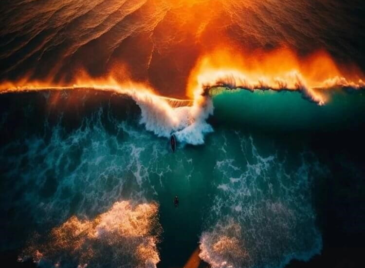

Нейросети превосходят людей
-
Нейросеть победила в конкурсе фотографий
Нейросеть победила в конкурсе фотографий. Фотореалистичное изображение от нейросети, которое одержало победу в конкурсе фотографий.
В прошлом году созданное нейросетью изображение победило в конкурсе картин. В феврале 2023 года технологии шагнули еще дальше — было создано настолько реалистичное изображение, что оно одержало победу в конкурсе фотографий.
Каждую неделю австралийский производитель техники DigiDirect проводит конкурс на самую красивую фотографию с денежным призом. На этот раз членам жюри очень приглянулся снимок с дрона, на котором два серфера катаются на волнах незадолго до наступления утра. Автором снимка был указан некий Джейн Эйкс. Оказалось, что под этим именем скрывались сотрудники студии Absolutely Ai. После одержания победы, они отказались от денежного вознаграждения и признались, что изображение было создано нейросетью. Они объяснили, что показанного на картинке пляжа не существует, как и фигурирующих на ней серферов. Авторам не нужно было вставать на рассвете, ехать на пляж, настраивать дрон и редактировать фотографию. Они просто ввели описание изображения в компьютерную программу. Результат превзошел все ожидания. Мало того, что изображение получилось очень красивым, так еще ни один из членов жюри не заметил подвоха. Это первый в истории случай, когда нейросеть одержала победу в фотоконкурсе.